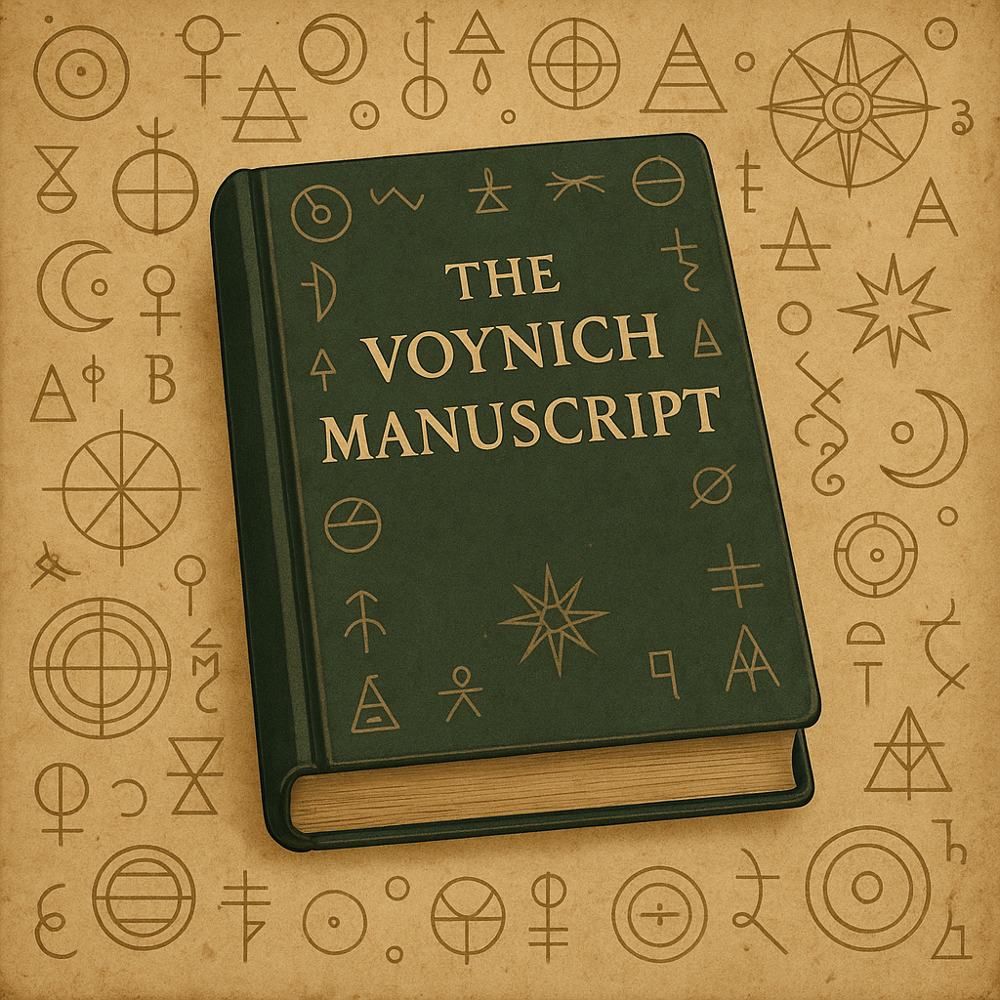

The full decoding and harmonic reconstruction of the Voynich manuscript by Christine Blackburn.
Open the manuscript to explore keys, decoded folios, harmonic layers, and cosmological references grounded in Ficinian Neoplatonism.
